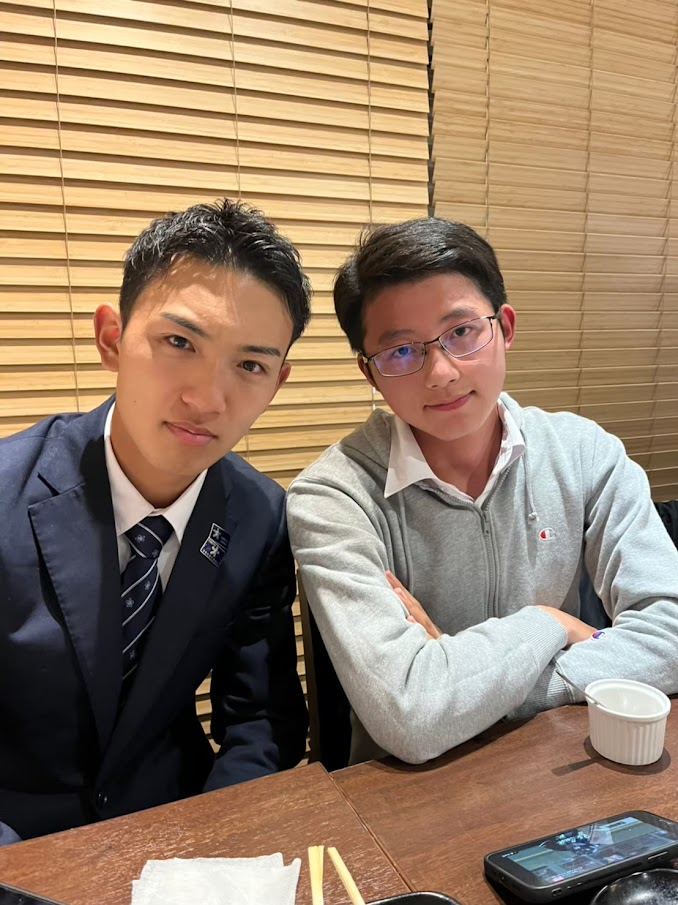

部員インタビュー初回となる今日は法学部政治学科の島田隼弥くんです。島田くんは65代唯一の高等科出身で来年度は主将を務めます。そのためアーチェリーの知識が豊富で部員から頼られることも多いです。
法学部政治学科は必修の授業が少なく、好きな授業を履修しやすいです。政治と一言で言ってもさまざまなことに関連しているので、興味を持ちやすいと思います。課題提出やテストをこなしていれば単位を落とすことはないので、身構えずに気楽に勉強できます。
私は学習院高等科の頃からアーチェリーをやっていて、当時から学習院大学の先輩方にご指導いただいていました。先輩方が楽しみながら練習し、試合ですばらしい成績を残している姿に憧れ、少しでも近づきたく入部を決めました。
履修登録の際、期末課題によって評価が決まる授業と週間課題によって評価が決まる授業とを半分ずつくらいの割合で履修し、どこかの期間に課題や試験が集中しないようにしています。毎週多少の課題をこなしながら練習にも取り組むことが習慣になり、負担をあまり感じずに過ごしています
他のスポーツができなくても、アーチェリーは上手になることが多いところです。私自身、球技は全くできませんがアーチェリーは何とかなっています。大学から新しいことを始めるとすると、アーチェリーという競技はおすすめです。
最近は一人でふらっと出かけることが多いです。見たい映画を見て、少し敷居の高そうなところで食事をし、書店で面白そうな本を探す、など。一人で出かけるのは友達と出かけるときにできないような自由な行動ができて、やってみると意外と楽しかったりします。
授業時間中に同時に先生が画面の向こうで授業を配信する同時配信型の授業と、WEB上に授業の音声などがアップロードされ、時間を問わず授業に取り組めるオンデマンド授業とありますが、私はオンデマンド授業の受講をせずに溜めてしまいがちです。すべての授業がオンデマンド授業であったら期末試験前に泡を吹いて倒れてしまうと思うので、同時配信型の授業もバランスよく履修することで、一週間のタイムマネジメントをしています。
コロナ禍で不安が多いと思いますが、アーチェリー部は如何なるご相談にもお答えします。ぜひお気軽にお尋ねください。
いかがだったでしょうか。今後はこのような形で部員インタビューを掲載していくので皆さんぜひお楽しみに…！次回は経済学部経済学科の伊藤琴子さんです！